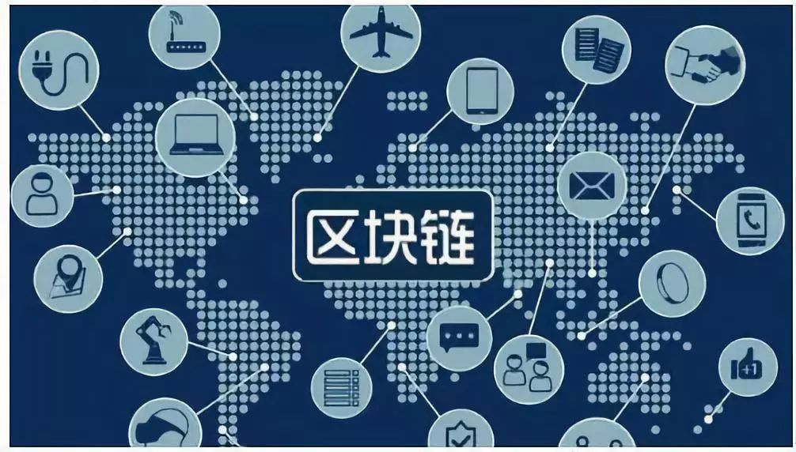

区块链安全思考

本文对区块链技术的安全问题和面临的一些挑战进行了分析，并提出一些安全建议。
区块链（Blockchain）是比特币的一个重要概念，它本质上是一个去中心化的数据库，同时作为比特币的底层技术。区块链是一串使用密码学方法相关联产生的数据块，每一个数据块中包含了一次比特币网络交易的信息，用于验证其信息的有效性（防伪）和生成下一个区块。

可以运用区块链的一些领域包括智能合约、证券交易、电子商务、物联网、社交通讯、文件存储、存在性证明、身份验证、股权众筹。
那么区块链安全吗？本文讲述对区块链安全的一些考虑。
区块链相关的安全事件
因为区块链技术和安全生态的成熟度不够，导致了许多安全相关事件的产生。下面是一些安全事件，这些安全事件主要是会导致财产损失。
安全事件分类
区块链相关的安全事件被分为三类，分别是OPSEC、智能合约、共识协议。
OPSEC，是指入侵组织和个人控制的信息来访问商业资产；
智能合约（Smart Contracts），是指由于不适当地运用和执行智能合约导致的事件；
共识协议（Consensus Protocol Incentives），是指恶意利用共识协议导致的事件。
安全事件分析
根据对2011到2018年期间相关事件的分析，估计有35.5百亿美元的资产被窃。
OPSEC（Open Platform for
Security），攻击者利用平台安全漏洞可以窃取大量资产。如2018年5月，360公司Vulcan（伏尔甘）团队发现了区块链平台EOS的一系列高危安全漏洞。经验证，其中部分漏洞可以在EOS节点上远程执行任意代码，即可以通过远程攻击，直接控制和接管EOS上运行的所有节点。预防此类漏洞，需要标准的安全解决方案。
智能合约。这类事件占总安全事件的22%左右。当智能合约不像期望的那样工作时，智能合约安全事件就发生了。但可以利用区块链的透明性来审计所有公布的智能合约。
共识协议。这类事件占总安全事件的12%左右。与智能合约攻击相比，共识协议攻击更难被发现，因为主要效应是不合适的节点共识或区块挖矿，对矿工来说很难缓解或检测这类攻击。
智能合约安全
智能合约是一套以数字形式定义的承诺，承诺控制着数字资产并包含了合约参与者约定的权利和义务，由计算机系统自动执行。智能合约的实现是基于区块链平台的，而区块链平台是基于分布式的共识协议的。
目前，像Ethereum这样主流的智能合约平台，都遵循复制执行的模式。在该模型中，智能合约的代码、对智能合约方法的调用，都不可逆的加入区块链中。每个参与区块链协议的节点都可以看到代码并从区块链中调用、实例化、执行系统的调用，得到相同的结果，维护相同的状态。
从安全的角度考虑：
首先，智能合约的开发生命周期与传统软件开发生命周期不同，尤其是测试、集成和维护是可重复的。因为智能合约的代码加入区块链以后就不能修改了，所以开发者如果想修改，就需要把代码绑定到变量中。因此，智能合约的开发生命周期就与标准软件不同。
其次，节点上的错误或使用智能合约中发现的错误是不可逆的，而且成本很高。事实上，黑客会经常寻找应用的智能合约中的漏洞，并报告给漏洞悬赏计划（项目）。而且这类攻击很难预防，因为应用的代码不能回顾去打补丁。当检测到漏洞后，必须应用新的智能合约来修复它。虽然这对开发者来说很难，但对社区来说，这或许是一种积极的方式。比如，开发者在修复已经应用的智能合约时，这样的修复可能会带来一些附带的损害，因为其他的智能合约可能是依赖修改的合约。而且开发者认为是漏洞的智能合约可能对依赖智能合约的开发者来说只是一个特性。从这个意义上说，智能合约与立法相似（Code is Law），因此，代码应该保持稳定，在应用前也应该仔细检查。
验证和测试
验证和测试对智能合约的开发来说是非常重要的，应当继承到分析和设计的过程中。
安全测试的目的就是确定程序中是否存在攻击者可利用的漏洞。智能合约也是一种程序，所以可能含有漏洞。智能合约一般比较短，但是同时存在的和永久的，所以与普通程序相比，更难变得正确。
智能合约漏洞除了含有一些通用（经典）漏洞外，还含有一些特定漏洞。因此，智能合约应该也有安全分析和测试的漏洞。
安全智能合约分发
因为智能合约平台大多都与加密货币相关联，因此也是诈骗的传播媒介。在传统软件分发时，有许多的模型来处理这些问题。比如，许多的开源项目背后都有社区对漏洞进行修复，提高工程（项目）的质量。而中心化的软件一般都有公司在背后运营。
相比之下，智能合约的分布不遵循以上的模式。开发者提交了智能合约后，智能合约就会被矿工加入区块链中。智能合约平台的不可逆性和共识抵抗性不允许任何人移除加入到智能合约，所以提出这样的安全架构是非常复杂的。
当前智能合约平台的矿工的激励具有冲突性：
矿工愿意增加每个提交的智能合约到区块链上，因为可以得到奖励；
矿工也需要确保生态的安全性，否则平台的热度过低也会影响得到的奖励。
所以一个安全的智能合约发布架构需要增加所有提交的智能合约到区块链上，同时要测试平台的安全性。
#加密经济协议和PRESTO框架
不同的区块链平台融合了不同的思想，并探索不同的交易模式。PRESTO框架的基础是持久性（Persistence）、鲁棒性（Robustness）、效率（Efficiency）、稳定性（STability）和最优性（Optimality）。下面我们详细描述一下这几个性质：最优性是协议需要满足的最基本的性质，可以通过最基本的计算和高级的优化理论等数学分析技术进行确认。在区块链协议中，最优性的例子包括标准网络/代理情况下的安全性和活跃度证明。
稳定性是参与者以最大兴趣来遵守协议的规则。在具体的例子中是指区块链协议是纳什均衡（Nash equilibrium）的，均衡是所有决策参与者的观点的最优结果。
效率。协议是否有效利用计算资源？是否尽可能快、尽可能少、尽可能随机、尽可能少使用资源、并行地执行核心任务？这些效率的限制会让设计者去考虑交易关于速度和最优的一个均衡。在区块链中，比特币协议使用的计算资源是不够高效的，因为随着哈希速度和能源消耗的增加，最大交易量却与5年前相同。
鲁棒性。假设理论上协议书接近最优的效率均衡的，但实际的分布式系统会产生更多的挑战，比如通信时延、异步等等。
持久性。如果协议收到某种特定攻击或遇到黑天鹅事件，系统能及时恢复吗？如果可以，那么恢复的速度和成本分别是多少？对持久性来说，应该考虑理论极限，应当假设系统会持续受到攻击，那么设计时就应当考虑如何恢复，并提供恢复时的特性。
PRESTO框架的应用方式：
首先，最优性需要协议能够解决预先定义的问题；
第二，效率需要资源被尽可能高效地使用；
第三，稳定性分析要确保自代码能够遵循和应用协议；
第四，在这个过程中还要考虑平衡的鲁棒性；
第五，持久性会超越平衡的思考，询问哪些特征不能在平衡中保证。
文章转载自:先知社区，点击阅读原文，即可传送